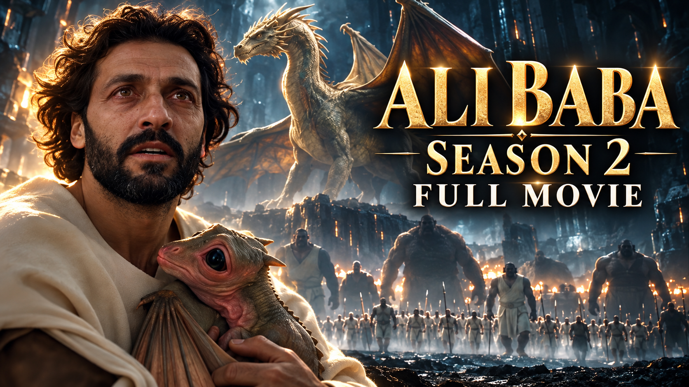

A cinematic dark fantasy reimagining of the world of One Thousand and One Nights.

THDFILMS ORIGINAL · 1001 REALMS · SEASON TWO
ALI BABA
Some doors should
never be opened.
A woodcutter. An ancient lamp. A discovery that reaches far beyond the treasure.
FANTASY / MYSTERY / THE UNEXPECTED01 — FEATURED STORY
THE THDFILMS COLLECTION
Enter another world.
The discovery was only the beginning. Step deeper into the world of 1001 Realms.
AN INDEPENDENT FILM STUDIO
The story.
Not the tools.
Cinema that invites you to look closer.
THDFILMS is the creative home of filmmaker, writer, actor and musician Hafid Abdelmoula. From experimental independent films to expansive fantasy worlds, the studio follows stories that question what we see, what we believe and who we become.
Hafid Abdelmoula
Hafid holds a Bachelor’s degree in Film from New Mexico State University and a Master of Fine Arts in Directing from Vermont College of Fine Arts. His work explores identity, belonging and the boundaries of perception.
2021Best Feature Film
Broken Gaieté
Santa Fe Film Festival
2021Best First Time Director
Broken Gaieté
World Music & Independent Film Festival
2023Rising Star Honoree
Hafid Abdelmoula
New Mexico Film + TV Hall of Fame
THDFILMS CREATIVE & CONSULTING
For brands
& creators.
Cinematic content. Clear creative direction.
Shape your ideas, strengthen your storytelling and produce videos with purpose.
YouTube Channel Review
A fresh perspective on your content, titles, thumbnails and video openings. Receive practical recommendations, a written action plan and a one-to-one consultation.
AI Filmmaking Consultation
Bring your film idea into focus. Get guidance on scripts, prompts, character consistency, shot planning, editing and sound for your project.
Brand Videos & Commercials
Tell your business story through film. From concept and script to a finished promotional video, with formats and deliverables agreed around your campaign.
Content Strategy & Storytelling
Give your content a clear direction. Develop focused themes, compelling video ideas, stronger hooks and a practical publishing plan.
AUTOMOTIVE INDUSTRY EXPERIENCE
Creative direction with a dealership perspective.
Drawing on Hafid’s background in dealership leadership, THDFILMS can help automotive businesses develop dealership introduction videos, vehicle campaign concepts and content for their sales teams.
Tell us about your project. We’ll discuss the scope, timing and quote before work begins.
BEYOND THE FRAME
A different
kind of story.
HAFID — Music
Original vocals, new interpretations and late-night sounds. Explore the musical side of Hafid Abdelmoula.
Listen on YouTubeSTAY CLOSE TO THE STORIES
The next story
starts here.
info@thdfilms.comFilm inquiries, creative consulting, press and collaborations.